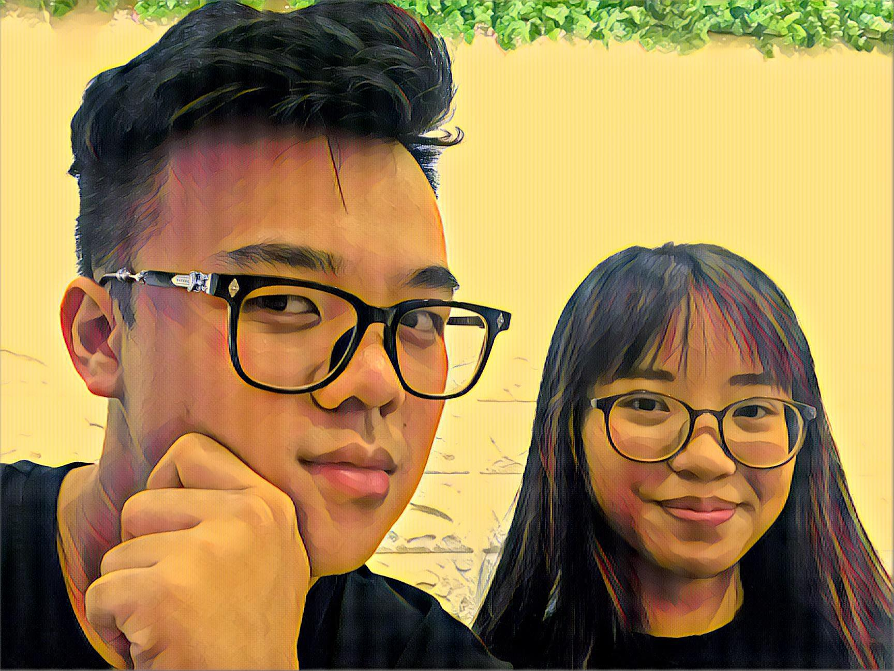

About me

Who is your tutor / instructor
My current tutor/ instructor is Dr.Nguyen Minh Long
Who is your labber
My labber is also Dr.Nguyen Minh Long
Have you any programming or web design experience?
Yes, I think that I have a little knowledge in programming and web design since I have participated in Intro to IT as well as Intro to programming. I have created my own website using online template and hosted it by using Github in order to finish my assignment/assesment in Intro to IT. About my experience in programming, I have learnt about Python and coding it using Pycharm to make different interesting things. In the conclusion, I think I have some experience in programming and web design due to my previous IT courses.
Do you see yourself as a programmer or designer, or both?
In my opinion, I see myself as a programmer since I find coding and testing codes are extremely fun and interesting to me. I love to code as well as figuring out better, faster codes for my program and see how it works. On the opposite side, designing is not my strength, I am a picky person which gives me hard time to choose anything especially colors, designs. Not only that, I have poor skills in Art or any kinds of decorating and designing. Because of that, designing if extremely difficult for me and also time-consuming since it will definitely take ages for me to choose a specific design and color that fit. In the end, I only see myself as a programmer because I like to code/programming but not a designer.
What has brought you to this course at RMIT?
This is my second semester studying IT in RMIT. In my first semester, I got to interact with coding, including HTML and Python. These 2 programming languages are very interesting to me and I want to study more about it. Because of that, I have enrolled in Web Programming and also Practical Database Concept in order to have deeper knowledge about HTML, Python and controlling databases. Later on, I will be studying Programming 1 so that my programming skills will significantly improve and it will help me in the future.
What are you hoping to get out of the course?
_
Assignments allow for individual or paried work. What strengths do you have and what strengths would you like your assignment partner to have?
_
What websites do you use the most? (NB: "family friendly" !)
_
Do you have any interests or hobbies?
_